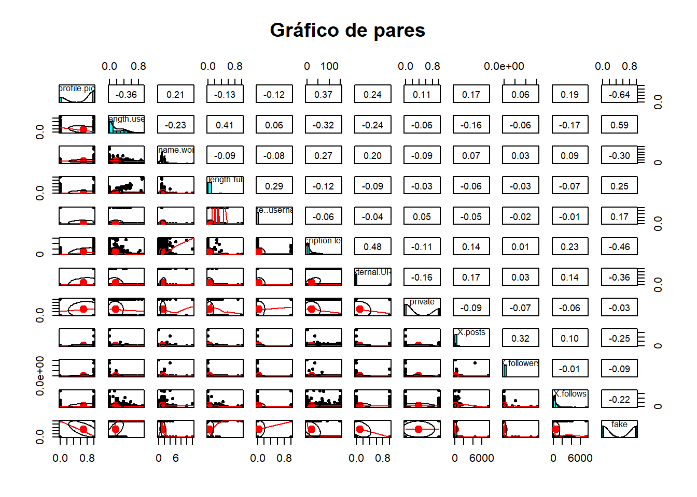
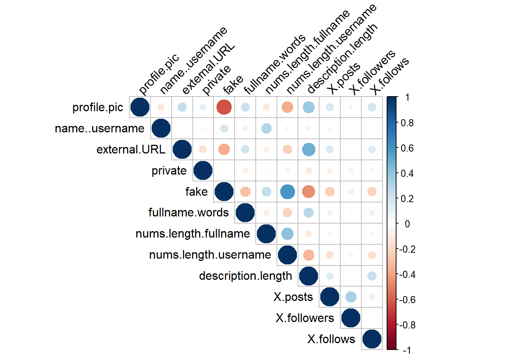

library(dplyr)
library(ggplot2)
library(tidyr)
library(corrplot)
library(psych)
library(gridExtra)2 Análisis exploratorio de datos
El análisis exploratorio de datos es una etapa crucial en cualquier proyecto de análisis de datos o modelado predictivo. Consiste en explorar y comprender los datos disponibles antes de aplicar cualquier técnica de modelado o inferencia. El objetivo principal del análisis exploratorio de datos es revelar patrones, tendencias, anomalías y relaciones dentro de los datos, lo que proporciona una base sólida para la toma de decisiones y la construcción de modelos.
En esta sección nos centraremos en explorar la estructura de los datos disponibles y entender la distribución y características de las variables. En el siguiente apartado, nos adentraremos en la visualización de datos para comprender mejor cómo se distribuyen y relacionan las diferentes variables.
dataset <- read.csv("datasets/train.csv")2.1 Exploración inicial del dataset
Vamos a comenzar viendo los aspectos más generales de nuestro dataset, que involucren toda la información, luego nos centraremos en aspectos más concretos.
2.1.1 Estructura del dataset
str(dataset)'data.frame': 576 obs. of 12 variables:
$ profile.pic : int 1 1 1 1 1 1 1 1 1 1 ...
$ nums.length.username: num 0.27 0 0.1 0 0 0 0 0 0 0 ...
$ fullname.words : int 0 2 2 1 2 4 2 2 0 2 ...
$ nums.length.fullname: num 0 0 0 0 0 0 0 0 0 0 ...
$ name..username : int 0 0 0 0 0 0 0 0 0 0 ...
$ description.length : int 53 44 0 82 0 81 50 0 71 40 ...
$ external.URL : int 0 0 0 0 0 1 0 0 0 1 ...
$ private : int 0 0 1 0 1 0 0 0 0 0 ...
$ X.posts : int 32 286 13 679 6 344 16 33 72 213 ...
$ X.followers : int 1000 2740 159 414 151 669987 122 1078 1824 12945 ...
$ X.follows : int 955 533 98 651 126 150 177 76 2713 813 ...
$ fake : int 0 0 0 0 0 0 0 0 0 0 ...Vemos que contamos con 576 observaciones, es decir, 576 cuentas de Instagram con su clasificación y 12 variables que son precisamente los datos que tenemos de estas cuentas.
Inicialmente podemos ver que todas nuestras variables son númericas, ya sean números enteros o decimales. Para el análisis de datos esto es un plus, pues los números son más manejables para la mayoría de técnicas de análisis de datos.
2.1.2 Valores NA
sapply(dataset, function(x) sum(is.na(x))) profile.pic nums.length.username fullname.words
0 0 0
nums.length.fullname name..username description.length
0 0 0
external.URL private X.posts
0 0 0
X.followers X.follows fake
0 0 0 Sorprendentemente no hay valores nulos, en los datasets suele haber columnas con valores NA con los que debemos tener cuidado, pero en nuestro caso, no tenemos ninguno, lo que de nuevo, nos facilitará el trabajo a lo largo de este libro.
2.1.3 Resumen estadístico
summary(dataset) profile.pic nums.length.username fullname.words nums.length.fullname
Min. :0.0000 Min. :0.0000 Min. : 0.00 Min. :0.00000
1st Qu.:0.0000 1st Qu.:0.0000 1st Qu.: 1.00 1st Qu.:0.00000
Median :1.0000 Median :0.0000 Median : 1.00 Median :0.00000
Mean :0.7014 Mean :0.1638 Mean : 1.46 Mean :0.03609
3rd Qu.:1.0000 3rd Qu.:0.3100 3rd Qu.: 2.00 3rd Qu.:0.00000
Max. :1.0000 Max. :0.9200 Max. :12.00 Max. :1.00000
name..username description.length external.URL private
Min. :0.00000 Min. : 0.00 Min. :0.0000 Min. :0.0000
1st Qu.:0.00000 1st Qu.: 0.00 1st Qu.:0.0000 1st Qu.:0.0000
Median :0.00000 Median : 0.00 Median :0.0000 Median :0.0000
Mean :0.03472 Mean : 22.62 Mean :0.1163 Mean :0.3819
3rd Qu.:0.00000 3rd Qu.: 34.00 3rd Qu.:0.0000 3rd Qu.:1.0000
Max. :1.00000 Max. :150.00 Max. :1.0000 Max. :1.0000
X.posts X.followers X.follows fake
Min. : 0.0 Min. : 0 Min. : 0.0 Min. :0.0
1st Qu.: 0.0 1st Qu.: 39 1st Qu.: 57.5 1st Qu.:0.0
Median : 9.0 Median : 150 Median : 229.5 Median :0.5
Mean : 107.5 Mean : 85307 Mean : 508.4 Mean :0.5
3rd Qu.: 81.5 3rd Qu.: 716 3rd Qu.: 589.5 3rd Qu.:1.0
Max. :7389.0 Max. :15338538 Max. :7500.0 Max. :1.0 Observamos que hay algunas variables binarias, otras con pocos valores y otras con un rango amplio. Vamos a usar las funciones apply para entrar un poco más en profundidad.
minimums <- sapply(dataset, min)
maximums <- sapply(dataset, max)
unique_values <- sapply(dataset, function(x) length(unique(x)))
dataset_values <- data.frame(
min=minimums,
max=maximums,
unique_values=unique_values
)
dataset_values min max unique_values
profile.pic 0 1.00 2
nums.length.username 0 0.92 54
fullname.words 0 12.00 9
nums.length.fullname 0 1.00 25
name..username 0 1.00 2
description.length 0 150.00 104
external.URL 0 1.00 2
private 0 1.00 2
X.posts 0 7389.00 193
X.followers 0 15338538.00 372
X.follows 0 7500.00 400
fake 0 1.00 2Identificamos fácilmente que hay 5 variables binarias, 3 no binarias con menos de 100 valores distintos y el resto con 100 o más valores distintos. Estas variables son:
binary_vars <- rownames(dataset_values %>% filter(unique_values == 2))Variables binarias son: profile.pic, name..username, external.URL, private, fake mid_vars <- rownames(dataset_values %>% filter(unique_values > 2 & unique_values < 100))Variables con entre 2 y 100: nums.length.username, fullname.words, nums.length.fullname big_vars <- rownames(dataset_values %>% filter(unique_values >= 100))Variables con 100 o más: description.length, X.posts, X.followers, X.follows 2.2 Gráfico de pares
Vamos a visualizar el panel de pares de variables, que nos da información de la relación entre cada par de variables.
pairs.panels(dataset, main="Gráfico de pares")
Es un poco díficil observar algo ya que tenemos 12 variables y los gráficos se ven muy pequeños. Vamos a observar la matriz de correlación.
2.3 Matriz de correlación
La matriz de correlación nos muestra la correlación entre cada par de variables. Sea M la matriz de correlación y sea (i, j) una posición de la matriz, entonces, la posición M[i, j] es la correlación entre las variables i y j.
cor_matrix <- cor(dataset)
cor_matrix profile.pic nums.length.username fullname.words
profile.pic 1.00000000 -0.36408701 0.21329514
nums.length.username -0.36408701 1.00000000 -0.22547213
fullname.words 0.21329514 -0.22547213 1.00000000
nums.length.fullname -0.13175622 0.40856654 -0.09434799
name..username -0.12490287 0.05688965 -0.08296878
description.length 0.36789194 -0.32117027 0.27252216
external.URL 0.23672932 -0.23712479 0.19656239
private 0.11473196 -0.06371257 -0.08907008
X.posts 0.16957023 -0.15744211 0.07335018
X.followers 0.06113663 -0.06278509 0.03322460
X.follows 0.19483278 -0.17241327 0.09485496
fake -0.63731535 0.58768653 -0.29879258
nums.length.fullname name..username description.length
profile.pic -0.13175622 -0.124902870 0.367891938
nums.length.username 0.40856654 0.056889649 -0.321170271
fullname.words -0.09434799 -0.082968780 0.272522165
nums.length.fullname 1.00000000 0.291149086 -0.117521050
name..username 0.29114909 1.000000000 -0.064813853
description.length -0.11752105 -0.064813853 1.000000000
external.URL -0.08872418 -0.039232382 0.482313071
private -0.03003033 0.046084001 -0.110328832
X.posts -0.05771550 -0.049808246 0.144823702
X.followers -0.02703471 -0.017760756 0.005929455
X.follows -0.06797109 -0.009529101 0.226561422
fake 0.24678210 0.170694729 -0.460824593
external.URL private X.posts X.followers
profile.pic 0.23672932 0.11473196 0.16957023 0.061136635
nums.length.username -0.23712479 -0.06371257 -0.15744211 -0.062785090
fullname.words 0.19656239 -0.08907008 0.07335018 0.033224604
nums.length.fullname -0.08872418 -0.03003033 -0.05771550 -0.027034712
name..username -0.03923238 0.04608400 -0.04980825 -0.017760756
description.length 0.48231307 -0.11032883 0.14482370 0.005929455
external.URL 1.00000000 -0.16261231 0.16500846 0.027188730
private -0.16261231 1.00000000 -0.08749503 -0.073472710
X.posts 0.16500846 -0.08749503 1.00000000 0.321385480
X.followers 0.02718873 -0.07347271 0.32138548 1.000000000
X.follows 0.14251936 -0.05754247 0.09822504 -0.011065994
fake -0.36280938 -0.02858602 -0.24535515 -0.093688783
X.follows fake
profile.pic 0.194832776 -0.63731535
nums.length.username -0.172413275 0.58768653
fullname.words 0.094854964 -0.29879258
nums.length.fullname -0.067971092 0.24678210
name..username -0.009529101 0.17069473
description.length 0.226561422 -0.46082459
external.URL 0.142519361 -0.36280938
private -0.057542468 -0.02858602
X.posts 0.098225040 -0.24535515
X.followers -0.011065994 -0.09368878
X.follows 1.000000000 -0.22483522
fake -0.224835224 1.00000000Aquí podemos buscar cualquier par de variables y ver su correlación. Buscando un poco vemos correlaciones significativas entre profile.pic y fake, la description.length y external.URL
Como hay muchos numeros y no es lo más riguroso buscar a ojo, vamos a hacer unos pequeños cálculos para encontrar todas las variables relacionadas más de un cierto threshold.
threshold <- 0.4
cor_table <- data.frame(as.table(cor_matrix)) %>%
rename(Correlation = Freq)
variables <- colnames(dataset)
n_variables <- length(dataset)
medium_point <- n_variables / 2
# Para que no haya repeticiones simétricas, vamos a poner la restricción de que el
# orden léxicográfico de una variable sea mayor (o menor) que la otra.
# Con un != no valdría porque habría valores filas simétricas
cor_table %>%
filter(as.character(Var1) > as.character(Var2) & abs(Correlation) > threshold) %>%
arrange(desc(abs(Correlation))) Var1 Var2 Correlation
1 profile.pic fake -0.6373153
2 nums.length.username fake 0.5876865
3 external.URL description.length 0.4823131
4 fake description.length -0.4608246
5 nums.length.username nums.length.fullname 0.4085665Ahora podemos sacar más información que la que habíamos visto de primeras. Hay una importante correlación entre si una cuenta es falsa y si tiene foto de perfil, el ratio de carácteres númericos en el nombre de la cuenta, la longitud de la descripción…
A conitnuación vamos a pasar a un análsis más concreto, para observar en particular cada variable de nuestro dataset.
2.4 Variables binarias
Las variables binarias solo toman dos valores (en nuestro caso todas 0 o 1) y la información que se puede extraer es distinta que el resto. Vamos a comenzar con ellas, como sabemos por nuestro análisis anterior, estás son profile.pic, name..username, external.URL y private y fake. Vamos a comenzar con fake ya que es la más relevante, pues es la clasificación de cada fila del dataset.
2.4.1 fake
Toma el valor 1 si la cuenta es falsa, y 0 si no es falsa. Es la variable más importante que tenemos en el dataset, pues es la que tratamos de estimar, de la que queremos a partir de las otras, extraer información para poder predecir esta.
table(dataset$fake)
0 1
288 288 Tenemos un 50 - 50 de clasificaciones, mitad de cuentas son falsas y la otra mitad no.
summary(dataset$fake) Min. 1st Qu. Median Mean 3rd Qu. Max.
0.0 0.0 0.5 0.5 1.0 1.0 La media y la mediana corroboran lo que comentabamos antes.
En resumen:
total_count <- length(dataset$fake)
count_fake <- sum(dataset$fake == 1)
count_real <- sum(dataset$fake == 0)
percent_fake <- (count_fake / total_count) * 100
percent_real <- (count_real / total_count) * 100
paste0("Cuentas falsas: ", count_fake, " (", round(percent_fake, 2), "%)")[1] "Cuentas falsas: 288 (50%)"paste0("Cuentas no falsas: ", count_real, " (", round(percent_real, 2), "%)")[1] "Cuentas no falsas: 288 (50%)"2.4.2 profile.pic
Toma el valor 1 para las cuentas con foto de perfil y un 0 para las que no tienen.
summary(dataset$profile.pic) Min. 1st Qu. Median Mean 3rd Qu. Max.
0.0000 0.0000 1.0000 0.7014 1.0000 1.0000 La media ya nos indica que en nuestro dataset hay más cuentas con foto de perfil que sin foto.
En resumen:
[1] "Cuentas con foto de perfil: 404 (70.14%)"[1] "Cuentas sin foto de perfil: 172 (29.86%)"2.4.3 name..username
Toma el valor 1 si el nombre de la persona es igual al username que se ha puesto en Instagram, y 0 en caso contrario.
summary(dataset$name..username) Min. 1st Qu. Median Mean 3rd Qu. Max.
0.00000 0.00000 0.00000 0.03472 0.00000 1.00000 La media nos indica que muy pocas cuentas cumplen esta condición.
total_count <- length(dataset$name..username)
count_name_equals_username <- sum(dataset$name..username == 1)
count_name_not_equals_username <- sum(dataset$name..username == 0)
percent_name_equals_username <- (count_name_equals_username / total_count) * 100
percent_name_not_equals_username <- (count_name_not_equals_username / total_count) * 100
paste0("Cuentas con mismo nombre y username: ", count_name_equals_username, " (", round(percent_name_equals_username, 2), "%)")[1] "Cuentas con mismo nombre y username: 20 (3.47%)"paste0("Cuentas con distinto nombre y username: ", count_name_not_equals_username, " (", round(percent_name_not_equals_username, 2), "%)")[1] "Cuentas con distinto nombre y username: 556 (96.53%)"2.4.4 external.URL
Toma el valor 1 si la cuenta tiene un enlace en el perfil, y 0 si no tiene.
summary(dataset$external.URL) Min. 1st Qu. Median Mean 3rd Qu. Max.
0.0000 0.0000 0.0000 0.1163 0.0000 1.0000 La mediana es 0 y la media 0.11. Pocas cuentas tienen enlace en el perfil.
total_count <- length(dataset$external.URL)
count_with_url <- sum(dataset$external.URL == 1)
count_without_url <- sum(dataset$external.URL == 0)
percent_with_url <- (count_with_url / total_count) * 100
percent_without_url <- (count_without_url / total_count) * 100
paste0("Cuentas con enlace en el perfil: ", count_with_url, " (", round(percent_with_url, 2), "%)")[1] "Cuentas con enlace en el perfil: 67 (11.63%)"paste0("Cuentas sin enlace en el perfil: ", count_without_url, " (", round(percent_without_url, 2), "%)")[1] "Cuentas sin enlace en el perfil: 509 (88.37%)"2.4.5 private
Toma el valor 1 si la cuenta es privada, y 0 si es pública.
summary(dataset$private) Min. 1st Qu. Median Mean 3rd Qu. Max.
0.0000 0.0000 0.0000 0.3819 1.0000 1.0000 total_count <- length(dataset$private)
count_private <- sum(dataset$private == 1)
count_public <- sum(dataset$private == 0)
percent_private <- (count_private / total_count) * 100
percent_public <- (count_public / total_count) * 100
paste0("Cuentas privadas: ", count_private, " (", round(percent_private, 2), "%)")[1] "Cuentas privadas: 220 (38.19%)"paste0("Cuentas públicas: ", count_public, " (", round(percent_public, 2), "%)")[1] "Cuentas públicas: 356 (61.81%)"2.5 Variables no binarias
Las variables no binarias tienen más información que podemos explorar, las binarias simplemente podíamos ver como se repartían los datos y no mucho más.
Las variables no binarias son:
non_binary <- dataset_values %>%
filter(unique_values > 2) %>%
arrange(unique_values)
non_binary min max unique_values
fullname.words 0 12.00 9
nums.length.fullname 0 1.00 25
nums.length.username 0 0.92 54
description.length 0 150.00 104
X.posts 0 7389.00 193
X.followers 0 15338538.00 372
X.follows 0 7500.00 400Salvo fullname.words, todas las variables tienen un alto número de valores únicos. Vamos a empezar con esta ya que podremos hacer algún que otro gráfico distinto al resto, y seguiremos el orden ascendente del número de valores únicos.
2.5.1 fullname.words
Representa el número de palabras en el nombre completo del usuario.
str(dataset$fullname.words) int [1:576] 0 2 2 1 2 4 2 2 0 2 ...Vemos que toma valores enteros.
summary(dataset$fullname.words) Min. 1st Qu. Median Mean 3rd Qu. Max.
0.00 1.00 1.00 1.46 2.00 12.00 La media es alrededor de la palabra y media, lo que tiene bastante sentido. Sin embargo, la mediana es tener una sola palabra para el nombre.
table(dataset$fullname.words)
0 1 2 3 4 5 6 10 12
57 283 187 34 7 4 2 1 1 Tenemos bastantes cuentas sin palabras en el nombre completo, lo que es sospechoso.
¿Qué tipo de cuenta tiene más de 1, 2, 3 o como mucho 4 palabras en su nombre completo? Es tan sospechoso como tener 0.
total_count <- nrow(dataset)
count_one_word <- sum(dataset$fullname.words == 1)
percent_one_word <- (count_one_word / total_count) * 100
count_multi_word <- sum(dataset$fullname.words > 1)
percent_multi_word <- (count_multi_word / total_count) * 100
count_no_word <- sum(dataset$fullname.words == 0)
percent_no_word <- (count_no_word / total_count) * 100
# Mostrar resultados
paste0("Cuentas sin nombre completo: ", count_no_word, " (", round(percent_no_word, 2), "%)")[1] "Cuentas sin nombre completo: 57 (9.9%)"paste0("Cuentas con nombre completo de una palabra: ", count_one_word, " (", round(percent_one_word, 2), "%)")[1] "Cuentas con nombre completo de una palabra: 283 (49.13%)"paste0("Cuentas con nombre de más de una palabra: ", count_multi_word, " (", round(percent_multi_word, 2), "%)")[1] "Cuentas con nombre de más de una palabra: 236 (40.97%)"2.5.2 nums.length.fullname
Ratio del número de carácteres númericos en el nombre completo respecto a la longitud del nombre completo.
str(dataset$nums.length.fullname) num [1:576] 0 0 0 0 0 0 0 0 0 0 ...table(dataset$nums.length.fullname)
0 0.08 0.1 0.11 0.12 0.14 0.18 0.2 0.22 0.24 0.25 0.27 0.29 0.31 0.33 0.36
518 1 1 1 2 1 2 1 3 3 4 1 1 3 11 2
0.38 0.4 0.43 0.44 0.46 0.5 0.57 0.89 1
1 7 2 2 1 3 1 1 3 Tenemos una gran concentración en el número 0 y vemos que la variable toma valores entre 0 y 1, de forma continua.
summary(dataset$nums.length.fullname) Min. 1st Qu. Median Mean 3rd Qu. Max.
0.00000 0.00000 0.00000 0.03609 0.00000 1.00000 Lo normal es no tener carácteres en el nombre completo (recordamos que es el nombre de la persona, no el username).
total_count <- nrow(dataset)
count_with_numbers <- sum(dataset$nums.length.fullname > 0)
percent_with_numbers <- (count_with_numbers / total_count) * 100
count_no_numbers <- sum(dataset$nums.length.fullname == 0)
percent_no_numbers <- (count_no_numbers / total_count) * 100
paste0("Cuentas con números en el nombre completo: ",
count_with_numbers, " (", round(percent_with_numbers, 2), "%)")[1] "Cuentas con números en el nombre completo: 58 (10.07%)"paste0("Cuentas sin números en el nombre completo: ",
count_no_numbers, " (", round(percent_no_numbers, 2), "%)")[1] "Cuentas sin números en el nombre completo: 518 (89.93%)"2.5.3 nums.length.username
Ratio del número de carácteres númericos en el nombre de usuario respecto a la longitud del nombre de usuario.
Muy parecido a la variable anterior, pero esta vez es respecto al nombre de usuario de Instagram. Probablemente haya ciertas diferencias como que será más común tener algún número en el username.
str(dataset$nums.length.username) num [1:576] 0.27 0 0.1 0 0 0 0 0 0 0 ...Toma valores entre 0 y 1, como la variable anterior.
summary(dataset$nums.length.username) Min. 1st Qu. Median Mean 3rd Qu. Max.
0.0000 0.0000 0.0000 0.1638 0.3100 0.9200 Se observa justamente lo que hemos comentado, es más común tener algún número en el username, respecto a los números en el nombre completo de la persona.
total_count <- nrow(dataset)
count_with_numbers <- sum(dataset$nums.length.username > 0)
percent_with_numbers <- (count_with_numbers / total_count) * 100
count_no_numbers <- sum(dataset$nums.length.username == 0)
percent_no_numbers <- (count_no_numbers / total_count) * 100
paste0("Cuentas con números en el nombre completo: ",
count_with_numbers, " (", round(percent_with_numbers, 2), "%)")[1] "Cuentas con números en el nombre completo: 277 (48.09%)"paste0("Cuentas sin números en el nombre completo: ",
count_no_numbers, " (", round(percent_no_numbers, 2), "%)")[1] "Cuentas sin números en el nombre completo: 299 (51.91%)"Prácticamente la mitad de usuarios tiene algún número en el nombre de usuario, mientras que en nombre completo, pocos tenían.
2.5.4 description.length
La longitud de la descripción de la cuenta de Instagram.
str(dataset$description.length) int [1:576] 53 44 0 82 0 81 50 0 71 40 ...Toma valores enteros, como es lógico por el significado de la variable.
summary(dataset$description.length) Min. 1st Qu. Median Mean 3rd Qu. Max.
0.00 0.00 0.00 22.62 34.00 150.00 La media es de unos 23 carácteres en la descripción, pero probablemente esté muy afectado por las cuentas sin descripción, ya que la mediana es 0.
count_with_description <- sum(dataset$description.length > 0)
percent_with_description <- (count_with_description / total_count) * 100
count_no_description <- sum(dataset$description.length == 0)
percent_no_description <- (count_no_description / total_count) * 100
paste0("Cuentas con descripción: ",
count_with_description, " (", round(percent_with_description, 2), "%)")[1] "Cuentas con descripción: 250 (43.4%)"paste0("Cuentas sin descripción: ",
count_no_description, " (", round(percent_no_description, 2), "%)")[1] "Cuentas sin descripción: 326 (56.6%)"Hay más cuentas sin descripción que con descripción. Vamos a calcular la media sin tener en cuenta todas esas cuentas que no tienen descripción:
cuentas_con_descripcion = dataset %>%
filter(description.length > 0)
paste0("La media de carácteres en la descripción es: ", mean(cuentas_con_descripcion$description.length))[1] "La media de carácteres en la descripción es: 52.124"2.5.5 X.posts
Representa el número de publicaciones que tiene una cuenta de Instagram.
str(dataset$X.posts) int [1:576] 32 286 13 679 6 344 16 33 72 213 ...De nuevo, valores enteros.
summary(dataset$X.posts) Min. 1st Qu. Median Mean 3rd Qu. Max.
0.0 0.0 9.0 107.5 81.5 7389.0 En este caso no pasa como con la descripción que la mediana era directamente 0, pero de nuevo vemos que la media es muy alta y la mediana muy baja.
count_with_posts <- sum(dataset$X.posts > 0)
count_no_posts <- sum(dataset$X.posts == 0)
percent_with_posts <- (count_with_posts / total_count) * 100
percent_no_posts <- (count_no_posts / total_count) * 100
paste0("Cuentas con publicaciones: ", count_with_posts, " (", round(percent_with_posts, 2), "%)")[1] "Cuentas con publicaciones: 419 (72.74%)"paste0("Cuentas sin publicaciones: ", count_no_posts, " (", round(percent_no_posts, 2), "%)")[1] "Cuentas sin publicaciones: 157 (27.26%)"Tenemos muchas cuentas sin publicaciones teniendo en cuenta que Instagram se usa principalmente para publicar…
Vamos a ver la media de publicaciones quitando las cuentas sin publicaciones y los outliers que tienen más de 1000 publicaciones:
cuentas_menos_1000_posts <- dataset %>%
filter(X.posts > 0 & X.posts <= 1000)
paste0("Media: ", round(mean(cuentas_menos_1000_posts$X.posts), 2))[1] "Media: 106.52"2.5.6 X.followers
Representa el número de seguidores que tiene una cuenta de Instagram.
str(dataset$X.followers) int [1:576] 1000 2740 159 414 151 669987 122 1078 1824 12945 ...summary(dataset$X.followers) Min. 1st Qu. Median Mean 3rd Qu. Max.
0 39 150 85307 716 15338538 Volvemos a tener una media mucho más alta que la mediana. Esta variable tiene un rango de valores muy disperso.
cuentas_con_seguidores <- sum(dataset$X.followers > 0)
cuentas_sin_seguidores <- sum(dataset$X.followers == 0)
percent_con_seguidores <- (cuentas_con_seguidores / total_count) * 100
percent_sin_seguidores <- (cuentas_sin_seguidores / total_count) * 100
paste0("Cuentas con seguidores: ", cuentas_con_seguidores, " (", round(percent_con_seguidores, 2), "%)")[1] "Cuentas con seguidores: 558 (96.88%)"paste0("Cuentas sin seguidores: ", cuentas_sin_seguidores, " (", round(percent_sin_seguidores, 2), "%)")[1] "Cuentas sin seguidores: 18 (3.12%)"Observamos que hay muy pocas cuentas sin seguidores.
Vamos a ver la media de seguidores quitando las cuentas sin seguidores y las cuentas que tienen más de 10000 seguidores.
cuentas_filtradas_seguidores <- dataset %>%
filter(X.followers > 0 & X.followers <= 10000)
paste0("Media: ", round(mean(cuentas_filtradas_seguidores$X.followers), 2))[1] "Media: 545.35"2.5.7 X.follows
Representa el número de personas que sigue una cuenta de Instagram.
str(dataset$X.follows) int [1:576] 955 533 98 651 126 150 177 76 2713 813 ...summary(dataset$X.follows) Min. 1st Qu. Median Mean 3rd Qu. Max.
0.0 57.5 229.5 508.4 589.5 7500.0 En este caso la media y la mediana no están tan alejadas como en los otros casos.
cuentas_con_seguidos <- sum(dataset$X.followers > 0)
cuentas_sin_seguidos <- sum(dataset$X.followers == 0)
percent_con_seguidos <- (cuentas_con_seguidores / total_count) * 100
percent_sin_seguidos <- (cuentas_sin_seguidores / total_count) * 100
paste0("Cuentas con seguidos: ", cuentas_con_seguidos, " (", round(percent_con_seguidos, 2), "%)")[1] "Cuentas con seguidos: 558 (96.88%)"paste0("Cuentas sin seguidos: ", cuentas_sin_seguidos, " (", round(percent_sin_seguidos, 2), "%)")[1] "Cuentas sin seguidos: 18 (3.12%)"Observamos que hay muy pocas cuentas sin seguidos. Vamos a ver si las cuentas que no siguen a nadie son las mismas que tampoco tienen seguidores:
cuentas_sin_seguidos_ni_seguidores <- dataset %>%
filter(X.followers == 0 & X.follows == 0)
nrow(cuentas_sin_seguidos_ni_seguidores)[1] 3Pues resulta ser que no, solo hay 3 cuentas que no tienen ni seguidores ni seguidos.
2.6 Relaciones entre variables
Matriz de correlación entre variables binarias y no binarias
cor_bin_nonbin <- cor(dataset[, c(binary_vars, rownames(non_binary))])
corrplot(cor_bin_nonbin, method="circle", type="upper", tl.col="black", tl.srt=45)
Estadísticas descriptivas comparativas entre cuentas falsas y reales
fake_stats <- sapply(dataset[dataset$fake == 1, rownames(non_binary)],
function(x) c(round(mean(x), 2), median(x), round(sd(x), 2)))
real_stats <- sapply(dataset[dataset$fake == 0, rownames(non_binary)],
function(x) c(round(mean(x), 2), median(x), round(sd(x), 2)))
comparison_stats <- data.frame(Fake = fake_stats, Real = real_stats)
rownames(comparison_stats) <- c("Media", "Mediana", "Desviación típica")
t(comparison_stats) Media Mediana Desviación típica
Fake.fullname.words 1.15 1.0 0.68
Fake.nums.length.fullname 0.07 0.0 0.17
Fake.nums.length.username 0.29 0.3 0.23
Fake.description.length 5.26 0.0 20.29
Fake.X.posts 8.93 0.0 28.01
Fake.X.followers 110.59 40.0 318.41
Fake.X.follows 302.17 70.0 705.06
Real.fullname.words 1.77 2.0 1.25
Real.nums.length.fullname 0.01 0.0 0.03
Real.nums.length.username 0.04 0.0 0.09
Real.description.length 39.98 27.0 42.79
Real.X.posts 206.05 74.0 550.95
Real.X.followers 170503.89 661.5 1282598.58
Real.X.follows 714.60 431.0 1051.60La tabla proporciona una comparación entre las estadísticas descriptivas de las cuentas falsas y reales en Instagram.
Observamos que, en promedio, las cuentas falsas tienden a tener menos palabras en el nombre completo y una longitud de descripción más corta en comparación con las cuentas reales.
Además, las cuentas falsas muestran un número significativamente menor de seguidores y personas seguidas en comparación con las cuentas reales, como indican las medias y medianas mucho más bajas en estas variables.
Por otro lado, las diferencias en las desviaciones estándar sugieren una mayor variabilidad en el número de seguidores y personas seguidas para las cuentas reales en comparación con las falsas.
2.7 Cuestiones generales
Vamos a explorar una serie de cuestiones generales acerca de nuestros datos, para entender mejor como se distribuyen nuestros datos y explorar relaciones interesantes:
- ¿Cuál es la proporción de perfiles privados con foto de perfil?
prop.table(table(
ifelse(dataset$private == 1, "Privada", "Publica"),
ifelse(dataset$profile.pic == 1, "Con foto", "Sin foto")))
Con foto Sin foto
Privada 0.29340278 0.08854167
Publica 0.40798611 0.21006944Lo más común es tener una cuenta pública y con foto
- ¿Cuál es la media de seguidores de los perfiles falsos frente a los públicos?
medias <- dataset %>%
group_by(fake) %>%
summarise(mean(X.followers))
data.frame(
Perfil=c("Real", "Falso"),
"Media de seguidores"=medias$`mean(X.followers)`) Perfil Media.de.seguidores
1 Real 170503.8854
2 Falso 110.5868- ¿Existe una correlación entre la longitud de la descripción y la cantidad de seguidores?
cor(as.numeric(dataset$description.length), as.numeric(dataset$X.followers))[1] 0.005929455Parece ser que no.
- ¿Cuál es la media del número de publicaciones según si el perfil es privado o no?
medias <- dataset %>%
group_by(private) %>%
summarise(mean(X.posts))
data.frame(
Cuenta=c("Pública", "Privada"),
"Media de publicaciones"=medias$`mean(X.posts)`) Cuenta Media.de.publicaciones
1 Pública 135.11798
2 Privada 62.78182- ¿Cuál es la proporción de perfiles con más de 1000 seguidores falsos frente a los reales?
table(dataset$fake,
dataset$X.followers > 1000) / rowSums(table(dataset$fake,
dataset$X.followers > 1000))
FALSE TRUE
0 0.64236111 0.35763889
1 0.98263889 0.01736111El 98.26% de las cuentas falsas tienen menos de 1000 seguidores. El 35.7% de las cuentas reales tienen más de 1000 seguidores.
- ¿Qué porentaje de cuentas tienen números en el nombre real, en función de perfiles falsos y reales?
medias <- dataset %>%
mutate(has.nums.fullname=as.numeric(nums.length.fullname > 0)) %>%
group_by(fake) %>%
summarise(mean(has.nums.fullname))
data.frame(
Cuenta=c("Real", "Falso"),
"Media del ratio de números en el nombre real"=medias$`mean(has.nums.fullname)`) Cuenta Media.del.ratio.de.números.en.el.nombre.real
1 Real 0.02777778
2 Falso 0.17361111El 2% de las cuentas reales tienen números en su nombre real mientras que el 17% de las cuentas falsas tienen números en el nombre real. Claramente tener números en el nombre real es algo sospechoso.
- ¿Cuáles son las cuentas falsas con más seguidores?
seguidores_fake <- dataset %>%
filter(fake == 1) %>%
select(X.followers, fake) %>%
arrange(desc(X.followers))
head(seguidores_fake) X.followers fake
1 3033 1
2 3003 1
3 2346 1
4 1489 1
5 1031 1
6 864 1No hay ninguna cuenta falsa con más de 3033 seguidores.
- ¿Cuántas cuentas reales tienen más seguidores que la cuenta falsa con más seguidores?
seguidores_real <- dataset %>%
filter(fake == 0 & X.followers > seguidores_fake$X.followers[1]) %>%
select(X.followers, fake) %>%
arrange(desc(X.followers))
head(seguidores_real) X.followers fake
1 15338538 0
2 12397719 0
3 6741307 0
4 5315651 0
5 3896490 0
6 890969 0paste0("Hay ", nrow(seguidores_real), " cuentas reales con más de ", seguidores_fake$X.followers[1], " seguidores")[1] "Hay 51 cuentas reales con más de 3033 seguidores"Interesante, el 9% del dataset se podría directamente clasificar como cuenta real, al tener más seguidores que la cuenta falsa con más seguidores.
2.8 Conclusiones
Con este análisis exploratorio hemos podido entender mejor la naturaleza de nuestros datos, entendiendo mejor la distribución de los mismos y pudiendo ver las primeras relaciones entre distintas variables.
El carácter númerico de nuestros datos nos permitirá que técnicas como la regresión lineal nos puedan dar buenos resultados, además de que, como hemos visto, hay ciertas relaciones clave entre distintas variables que podremos explotar.
Un buen análisis exploratorio es muy importante y puede marcar el desarrollo del estudio de nuestros datos. Hemos obtenido un conocimiento inicial que nos vendrá muy bien cuando comencemos a aplicar las primeras técnicas de análisis de datos.
En el siguiente apratado, visualización de datos, vamos a visualizar algunos de los puntos que hemos tratado en este análisis exploratorio, para poder hacernos un modelo mental aún más cercano a los datos.